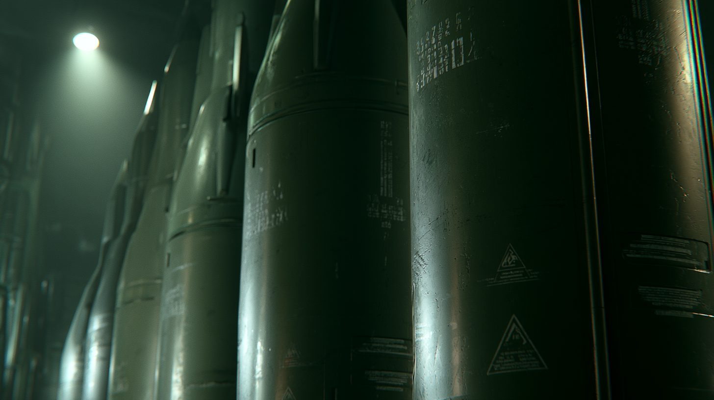
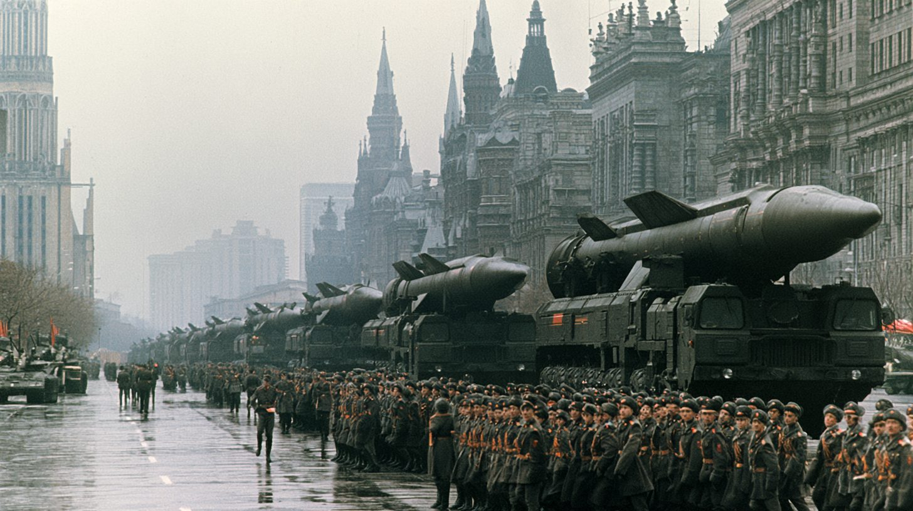

01 「核抑止とは何か」— 概念と基本構造
「核抑止（Nuclear Deterrence）」とは、「核で攻撃すれば自国も核で報復される」という恐怖によって、 相手国の先制攻撃を未然に防ぐ論理だ。理論上は「撃てば自分も死ぬ」という相互確証破壊（MAD）の均衡が 平和を維持する。冷戦期、アメリカとソ連がそれぞれ数万発の核を保有しながら直接衝突しなかったのは、 この論理が機能した結果とも言われる。
だが核抑止は「核保有国どうし」の間でしか成立しない。非核国は核保有国から攻撃されても報復の手段を持たない。 この非対称性が、独裁者や権威主義体制に「核を持てば不可侵になれる」という動機を与え続けてきた。 現在、核保有9カ国（アメリカ・ロシア・中国・フランス・イギリス・パキスタン・インド・イスラエル・北朝鮮）のうち、 NPT（核不拡散条約）の枠外にある4カ国（インド・パキスタン・イスラエル・北朝鮮）はいずれも条約に縛られずに核を保有している。
NPTは1970年に発効した国際条約で、「核保有5カ国（アメリカ・ロシア・中国・フランス・イギリス）は核軍縮を進める義務を負い、 非核国は核開発をしない代わりに平和利用の権利を持つ」という取引を骨格にしている。 191カ国が加盟する最大規模の軍備管理条約だが、核保有国が「核軍縮の義務」を果たしてこなかった二重基準は、 長年にわたって新興国の不信を積み重ねてきた。
02 なぜ独裁者は核を欲しがるか — 放棄した国の末路
核を手放した国の指導者たちはどうなったか。その答えは残酷なほど一致している。 リビアのカダフィは核を捨てて国際社会に復帰した8年後、北大西洋条約機構の空爆の支援を受けた反政府勢力に殺された。 ウクライナはブダペスト覚書の「保証」を信じて1,900発の核を放棄し、30年後に全面侵攻を受けた。 イラクのフセインは実際には核を持っていなかったにもかかわらず、「曖昧戦略」が裏目に出て2003年に侵攻された。 北朝鮮だけが核を持ち続け、今も政権が存続している。
この4つの教訓が組み合わさると、権威主義体制のリーダーにとっての結論は自明に見える—— 「核は絶対に手放してはならない。手放した国の末路が答えだ」。

03 タイムライン — 核秩序の崩壊史
ブダペスト覚書 — ウクライナが核を手放す
ウクライナはソ連崩壊で引き継いだ約1,900発の核弾頭（当時世界第3位）を放棄し、ロシアへ移管。 見返りとして米・英・露がウクライナの「主権と領土保全を尊重する」と約束した。 だが覚書は条約ではなく、法的拘束力を持たない政治的文書だった。
イラク侵攻 — 「疑惑」だけで国が滅ぶ
アメリカ主導の連合軍がフセイン政権を打倒。大量破壊兵器は結局発見されなかった。 フセインが査察を拒否し曖昧な態度を取り続けた結果、「持っていないことを証明できなかった」 ために侵攻を招いた。核を「疑われる」だけで国が滅ぶという前例が作られた。
リビアが核開発計画を放棄
カダフィはイラク侵攻の直後、電撃的に核・化学・生物兵器の開発計画を放棄すると宣言。 国際社会への復帰と制裁解除を求めた「取引」だった。アメリカはこれを「賢明な選択」と絶賛した。 北朝鮮はこの動きを「核放棄の愚かさ」の事例として以後繰り返し言及する。
カダフィ殺害 — 「核を捨てた者の末路」
北大西洋条約機構の空爆支援を受けた反体制派に追い詰められ、カダフィは処刑された。 核放棄から8年後のことだった。「リビアの選択」は以後、世界の独裁者に 「核を捨てれば同じ目に遭う」という反面教師として機能し続けている。 北朝鮮外務省は「帝国主義の約束の空虚さ」を示す証拠として即座に声明を発表した。
ロシアのウクライナ侵攻 — ブダペスト覚書の破綻
2014年のクリミア併合に続き、2022年2月にロシアがウクライナへの全面侵攻を開始。 「保証した」米・英は武器・資金の支援はしたものの、核の使用を示唆するロシアの威嚇を前に 直接参戦を避け続けた。ブダペスト覚書は事実上の「紙切れ」となり、 「核を持たない非核国は核保有国から保護されない」という現実が改めて証明された。
米・イスラエルがイランの核施設を攻撃
アメリカとイスラエルがイランの核施設・弾道ミサイル拠点・政治指導部を同時攻撃し、 ハーメネイー最高指導者が死亡（イラン核交渉の詳細はこちら）。 イランは核施設が完成する前に攻撃を受けたことになる。 攻撃後、イラン国内では強硬派を中心に「NPT脱退と核武装の正当化」論が噴出。 「NPTに留まっていて何の利益があったか」という問いが、中東諸国から東アジアまで広がった。
04 核をめぐる5つの立場
| 立場 | 核に関するスタンス | 主な主張 | 今後の動向 |
|---|---|---|---|
| イラン強硬派・権威主義体制 | 核武装も自衛の権利 | 放棄した国はすべて滅んだ。NPTは二重基準 | イラン攻撃後に核武装論が噴出 |
| アメリカ・西側諸国 | NPT体制の維持 | 核拡散はリスクを指数的に高める | 同盟国への核の傘強化が焦点 |
| NPT・IAEA | 不拡散体制の維持（危機感） | 二重基準が条約信頼を崩壊させている | 体制存続か崩壊の岐路 |
| 北朝鮮 | 核武装（実証済み） | リビアは愚かな選択。我々は正しかった | 核を外交カードに使い続ける |
| サウジ・韓国 | 核の傘への疑念が高まる | アメリカの保証は信頼できるか | NPT脱退・独自核開発の可能性 |

05 データ・統計
主要9カ国の核弾頭推定保有数（2025年・SIPRI推計）
ロシア・アメリカで世界の核弾頭の約87%を占める。中国は急速に増加中（2020年の約300発から500発超へ）。 北朝鮮の50発は小規模に見えるが、韓国・日本への核攻撃には十分な数だ。出典：SIPRI Yearbook 2025
世界の核弾頭総数の推移（1960〜2025年）
冷戦ピーク（1985年）の約68,000発から現在約12,100発へと80%削減。しかし近年は下げ止まりし、 中国・北朝鮮・パキスタンの増強で新たな増加フェーズに入りつつある。出典：SIPRI / FAS Nuclear Notebook